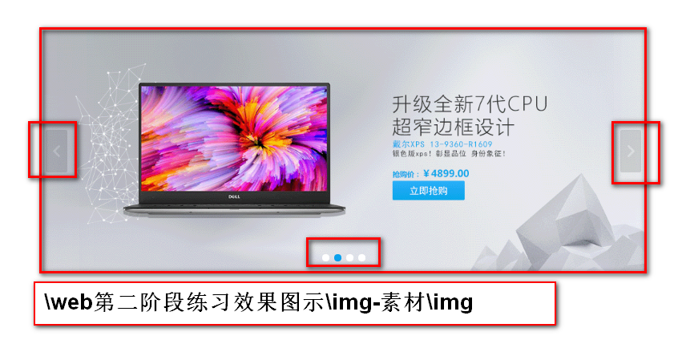

display 取值： 1.block 让元素的表现和块级一致 2.inline 与行内元素一致 3.inline-block 与行内块元素一致 4.table 与table一致 5.none 不显示元素，隐藏 块级：独占一行，可以设置尺寸，上下外边距有效 行内：共用一行，尺寸无效，上下外边距无效 行内块：共用一行，可以设置尺寸，上下外边距有效 table：独占一行，可以设置尺寸，尺寸以内容为主
visibility 取值：1.visible 默认值，可见 2.hidden 隐藏不可见 问题：visibility:hidden和display:none区别 visibility:hidden；隐藏，元素不脱离文档流，在当前页面不可见，但是占据位置 display:none；隐藏，元素脱离文档流，隐藏后不占位置，后面元素上前补位
opacity 取值：0~1 值越小越透明 问题：opacity和rgba的区别 rgba只会改变当前颜色的透明度 opacity，元素内部只要元素相关的颜色都会跟着透明
vertical-align 使用场合 1.表格中 td/th 取值 top/middle/bottom 2.img与文字的排版 改变的是img与前后文本的对齐方式 取值 top/middle/bottom/baseline基线 通常，会将所有的图片与文字的对齐方式，改为非基线对齐的方式
cursor 取值：1.default 箭头 2.pointer 小手 3.crosshair 十字 4.text 文本输入的I 5.wait 等待 6.help 帮助
ul的样式 1.列表项标识 list-style-type: 取值 none/disc/circle/square 2.列表项标识，设置为图片(图片要小) list-style-image:url(路径); 3.列表项标识的位置 list-style-position:inside/outside(默认值) 设置列表项是在li的内部还是外部 4.简写方式 list-style:type image position; 项目中最常用的写法list-style:none; 去掉列表标识
position 取值：static 默认，静态(默认文档流定位) relative 相对定位 absolute 绝对定位 fixed 固定定位 当一个元素，被position修饰，并且取值为relative/absolute/fixed其中一种时，这个元素被称为已定位元素 已定位元素，解锁了4个偏移属性 top + 往下 - 往上 right + 往左 -往右 bottom + 往上 -往下 left +往右 -往左 偏移属性，定义了元素距离某一个方向移动了多少距离 1.相对位移 相对定位，相对自己原来位置偏移某个距离 position:relative;配合4个偏移属性使用 特点：1.不脱离文档流。后面元素不会上前补位 2.相对定位，如果不写偏移量，元素效果与没写定位是一样的. 使用场合 1.自身位置的微调 2.作为绝对定位的祖先级元素 2.绝对定位 position:absolute；配合偏移量使用 特点： 1.绝对定位，脱离文档流，元素不占页面空间，后面元素上前补位。 2.绝对定位的元素，会相对于 "离自己最近的""已定位的""祖先元素"实现位置的初始化 如果没有 "已定位的""祖先元素"，相对于body实现位置初始化 3.绝对定位元素会变成块级元素 4.绝对定位元素，如果不写宽，定义之后，宽靠内容撑开 3.固定定位 position:fixed;配合偏移量使用 将元素固定在页面的某个位置，不会随着滚动条发生位移变化 特点：1.脱离文档流 2.元素变为块级元素 3.不写宽的会被内容撑开 4.相对body做位置的初始化 4.堆叠顺序 特点： 1.默认堆叠顺序，后定位的元素，堆叠顺序高 2.定位的脱离文档流，和浮动的脱离文档流，不是一个体系 3.使用z-index设置堆叠顺序 z-index:无单位数字 一般情况 1~1000 4.堆叠顺序，只对已定位元素有效 5.堆叠顺序，对父子级无效。子元素永远在父元素上面显示
1.兄弟选择器
兄弟元素：具有相同父元素的平级元素
兄弟选择器，只能找弟弟，不能找哥哥
①相邻兄弟选择器
获取紧紧挨在某元素后面的兄弟元素
选择器1+选择器2{}
②通用兄弟选择器
获取某元素后，所有符合要求的兄弟元素
选择器1~选择器2{}
练习
< h3 >小白兔< /h3 >
< div >小了白了兔< /div >
< div >白了又了白< /div >
< div >爱了吃了萝了卜了和了青了菜< /div >
< div >蹦了蹦了跳了跳了真了可了爱< /div >
标题与正文之间间距30px
正文每行之间间距10px
2.属性选择器
id class style title name value width.......
允许通过元素所附带的属性，及其值来匹配页面元素，很精准
①[attr] attr代表任意属性
匹配页面中所有带attr这个属性的元素
[id]{} [id][title]{}
②elem[attr]
匹配页面中所有带attr属性的elem元素
p[title]{} p[id][title][class].....{}
③elem[attr=value]
匹配页面中带attr属性，并且值为value的elem元素
div[title="woyouyeye"][class="c"]{}
④模糊属性值匹配
[attr^=value]{} 匹配attr的值以value开头的元素
[attr$=value]{} 匹配attr的值以value结尾的元素
[attr*=value]{} 匹配属性值中，有value的元素
[attr~=value]{} 匹配属性值中，有value这个独立单词的元素
3.伪类选择器
:link :visited :hover :active :focus 已经学过的伪类
①目标伪类(锚点)
让被激活的锚点，应用样式
选择器：target{}
练习
09_ex
点击菜名，显示图片
菜名放在ul>li>a
海鲜面 四季春饼 八大碗
作业：1.完成学子首页1楼 2.完成学子商城轮播图的静态页面 